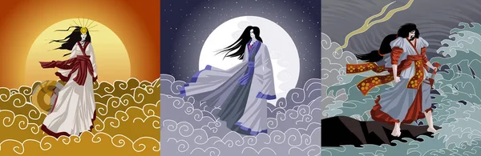

O que é o Xintoismo: A antiga crença japonesa
A mitologia japonesa, também conhecida como Xintoísmo (onde a palavra Shinto significa "caminho dos deuses"), é a fé considerada a espiritualidade tradicional do Japão, considerada também uma religião por estudiosos ocidentais. A crença foi iniciada entre 8000 a.C. á 300 a.C, período que foi marcado pela expansão do ideal de filosofia de vida entre a harmonia entre as montanhas, rios, ventos, árvores e outros elementos da natureza e o homem. Esta religião, desprovida de filosofia e de rituais complexos, é baseada na apreciação das maravilhas e belezas da natureza, cuja esta antiga crença diz e prática o respeito às forças naturais, que são consideradas espíritas e chamadas de kami.Basicamente, o xintoísmo se caracteriza pelo culto à natureza e aos espíritos ancestrais que são reverenciados por meio de oferendas e orações realizadas em altares e em templos por todo Japão.

Apesar de suas raízes anciãs o xintoísmo foi instituído somente a partir do século VI. Nesse momento, ele teve contato com outras religiões e doutrinas religiosas como o Budismo e o Confucionismo, oriúndas da China. O xintoísmo surgiu antes do budismo, no entanto os xintoístas absorveram muitas das crenças budistas em seus rituais e filosofia. Estas são duas religiões que estão sincretizadas no Japão, pois cerca de 80% dos japoneses praticam os rituais xintoístas atrelados aos preceitos do budismo, onde, geralmente, rituais atrelados a vida são feitas a moda xintoista e os atrelados a morte são a moda budista. Vimos que esta filosofia de vida baseia-se no culto aos kami. Esta palavra é frequentemente traduzida como "deus" ou "divindade", o que não condiz completamente com o conceito, dado que os kami podem ser também forças vitais ou espíritos da natureza. Ao contrário dos deuses das outras religiões e mitologias, os kami não são onipotentes ou oniscientes, possuindo poderes limitados, onde nem todos são bons. Alguns kami são locais ou conhecidos como espíritos de um local em particular ou a lugares (montanhas, ervas, árvores, vales, rios, mares). Outros representam elementos ou processos da natureza, como por exemplo, Amaterasu, a deusa do Sol, Tsukiyomi, deus da lua, Susanoo, deus dos oceanos e das tempestades.
Izanami e Izanagi eram deuses que representavam o Céu e a Terra, e foram eles os criadores de Oyashima (as grandes oito ilha do arquipélago japonês). Também criaram o Sol, a Lua, as tempestades e outros fenômenos naturais além de serem os responsáveis pelo nascimento de outros deuses e da civilização japonesa como um todo. Após uma emblematica trama entre a morte de Izanami e a ida de Izanagi ao Yomi(mundo dos mortos) para tentar salvar sua esposa, Izanagi se sentiu desonrado e impuro após o acontecido e foi se purificar no mar. A sujeira que saiu no banho se transformou em outros deuses malignos e ao lavar o rosto, de seu olho esquerdo nasceu Amaterasu, do seu olho direito, Tsuki-yomi, e do seu nariz Susanoo. Foi nesse mesmo evento que vários outros deuses e seres surgiram tanto das vestes, quanto da sujeira e dos fluidos corporais do deus. Alguns desses seres memoráveis seriam Fujin e Rajin , deus dos ventos e deus dos trovões, respectivamente. Fujin, Raijin e Amaterasu são responsáveis pelo clima do universo, por isso são representados quase sempre juntos (em algumas versões eles são até irmãos). Ainda nesse banho, os Youkai tiveram origem, pois Izanagi ao tirar a roupa e seus objetos pessoais, estes se converteram em deuses e monstros que passaram a dominar a terra.